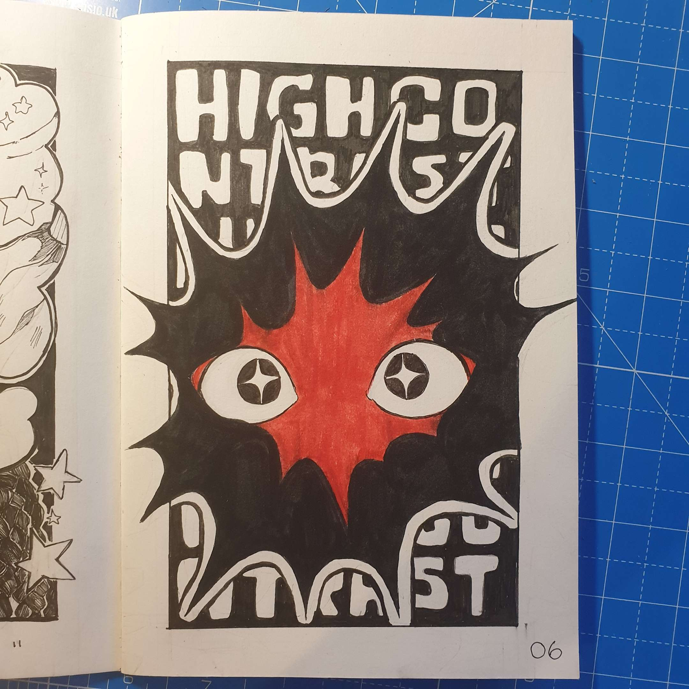
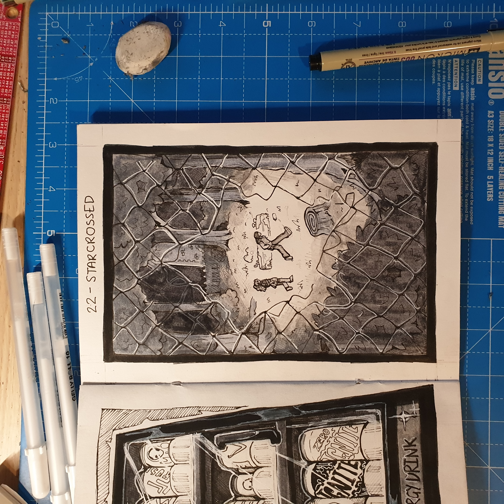

MAGTOBER / INKTOBER
is finished!
I completed all the days!
My first ever complete Inktober, wow.
Thank you so much for sticking around for this journey but don't worry; this isn't the end. All my energy now will be directed to working on the first issue of Cryptid Hunt.
I hope these drawings have been a nice introduction to the world and characters I love so dearly. I hope you came to love them too.
Future updates on Cryptid Hunt will be posted here eventually. But goodbye for now! And thanks again!
- sewyn, nov 2 2023
days
click here for the most recent!
DAY 1 - SOUR CANDY

ASHTI: Guess who just got a pack of Mega Sourz?
JUDITH: Urgh, I bet they're not even that sour
ASHTI: Oh, rea~lly? Have one then
DAY 2 - PRIZED POSSESSION

Each panel is a different character's prized possession!
DAY 3 - CITRUS

juice :)
DAY 4 - NEON
i am not skilled enough to draw a good neon light in just greyscale, traditionally üëç
DAY 5 - CROSS MY MIND
"I wonder if you look both ways when you cross my mind."
DAY 6 - HIGH (OR LOW) CONTRAST

I picked high contrast for this. But man, today was rough so this is all I could muster out of me.
It's simple, but it definitely contrasts everything I've done so far, haha.
The usage of red ink will probably only happen here too.
DAY 7 - SHHH!
Better be quiet
DAY 8 - INSIDE VS OUTSIDE
i wonder what lays outside, just out of sight - but never out of mind
DAY 9 - JUST THE TWO OF US
just the two of us...
DAY 10 - CRYPTID >:-)

this is like the whole reason why i picked this prompt list
DAY 11 - OIL SLICK
he's a lil oil cryptid :)
DAY 12 - PICK 1 THING AND FILL A PAGE WITH STUDIES
I picked onions!
DAY 13 - UNREAL / IMPOSTER

That's not me.
DAY 14 - HEADACHE
head splitting open
DAY 15 - SHUFFLE AND DRAW TO A SONG
a flash of a scene through the lyrics of a song
DAY 16 - TRANCE

"what if i just disappeared"
DAY 17 - UNDERGROUND
rushed this one, kinda sad cuz i like the idea still so i'm gonna redo it eventually
DAY 18 - RANDOM WORD GENERATOR
I purposely looked up a weird word generator and got the word "garbology", which is the study of garbage.
DAY 19 - FORGIVE FEAR
Struggled to understand this prompt. I guess it's about conquering fear, but I just decided to draw a bug instead as, well, people are scared of bugs and I was tired so I turned to my beetle fascination for comfort
DAY 20 - PULSE / VEIN / ARTERY
"Now I know how Daphne felt."
DAY 21 - ENERGY DRINK
Judith definitely drinks the alien branded one
DAY 22 - STAR-CROSSED
"Doomed from the start."
DAY 23 - LOTS OF ANXIETY
poor jude
DAY 24 - REWORK AN OLD PIECE
I decided to redraw the below picture of Ashti taking a selfie with a Fresno Nightcrawler. I was considering redrawing a more complex image but man, it's tiring
OLD ART (2020)
DAY 25 - INKBLOT
Friend :)
DAY 26 - TEETH
Fresno Nightcrawlers get compared to teeth sometimes
DAY 27 - PAY HOMAGE TO ANOTHER ARTIST
Here is MC with my friend Kiwillien/Hewie's original character - Hazel! Check out their art here!
Whilst MC is eager to find proof of cryptids and ghosts, Hazel is more focused on aliens! Hewie's art has inspired me for years now, so I had to pay homage to them here <3 Thank you Hewie!!
DAY 28 - TV SHOW
This piece was done on the road. Sketched out on a train to York, then half inked at a Halloween party, then finished in my family home the day after
DAY 29 - MOTHER
MC's mother and Jude's mother have regular get-togethers to gossip
DAY 30 - YOUR WORKSPACE
Ok so technically the picture I used for reference was taken on like day 6, but I had a feeling that I'd be away from home when this prompt came up. I was, but I didn't end up doing the prompt until I got home so. Yeah - it's nowhere near this tidy right now.
DAY 31 - KISS GOODBYE
Well - that's all folks!
The Cryptid Hunt gang wish you goodbye.
(for now!)